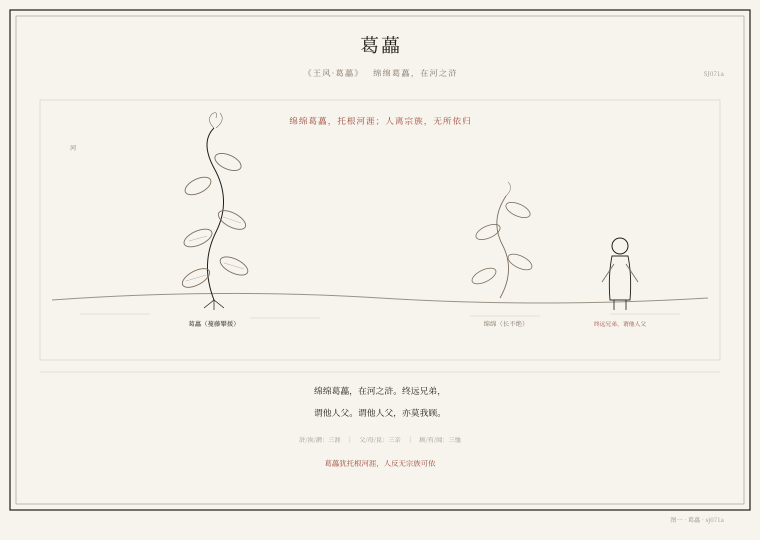
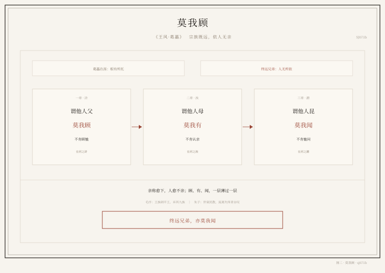

第七十一篇 葛藟
王风 · 之七 SJ071
朗读 · 普通话
依经文原文朗读，章次不读出；配古琴底乐，不改速、不加拖腔。全库同一音色（豆包 TTS），非播音员录制。
一 解题
诗三判：
- 谁在说：一个流离失所、远离宗族的王族子弟。诗里的「我」，是终远兄弟、转而称呼别人为父、为母、为昆的人。
- 说什么事：绵绵不断的葛藟，还攀附在河涯之上；自己却离开了同族兄弟，去认别人做父、做母、做兄。就算一口一声叫着别人的亲长，人家也不肯顾恤、不肯认亲、不肯相闻。
- 为何编在此：王风第七首。前一篇《兔爰》写乱世君子受祸，这一篇写乱世族人离散；一在邦国受祸，一在宗族无依；都不是一人之私，都是王政之衰。
《毛序》：「《葛藟》，王族刺平王也。周室道衰，弃其九族焉。」
毛传：「兴也。绵绵，长不绝之貌。水厓曰浒。」「兄弟，同族也。」「有，识也。」「闻，相闻也。」
郑笺：「葛也藟也，生于河之厓，得其润泽，以长大而不绝。兴者，喻王之同姓，得王之恩施，以生长其子孙。」「兄弟，犹言宗族也。」
朱子《诗集传》：「兴也。绵绵，长而不绝之貌。岸上曰浒。世衰民散，有去其乡里家族而流离失所者，作此诗以自叹。言绵绵葛藟，则在河之浒矣；今乃终远兄弟，而谓他人为己父。己虽谓彼为父，而彼亦不我顾，则其穷也甚矣。」二章：「水涯曰涘。谓他人父者，其妻则母也。有，识有也。春秋传曰，不有寡君。」三章：「夷上洒下曰漘。漘为言唇也。昆，兄也。闻，相闻也。」
本库的看法：《葛藟》是一首「流离失所、宗族无依」的诗。
葛藟尚托河涯，族人反弃本根；认他人为亲，而人莫之恤。诗面是依人作亲，诗教是闵周族散；不是攀附别人，是无枝可依。
先辨三物：藟不是「磊」，是葛类蔓生之藤；绵绵不是「绵柔」，是长不绝之貌；浒、涘、漘都是水涯，不是地名；终不是「终于」，是既、已经；兄弟不是单指胞兄胞弟，是同族；谓不是「所谓」，是称呼；顾不是「回头看」，是眷念、顾恤；有不是「有无」，是识有、亲有；昆不是「昆仑」，是兄；闻不是「听见」，是相闻、恤问。
二 经文
第一章
绵绵葛藟，在河之浒。终远兄弟，谓他人父。谓他人父，亦莫我顾。
第二章
绵绵葛藟，在河之涘。终远兄弟，谓他人母。谓他人母，亦莫我有。
第三章
绵绵葛藟，在河之漘。终远兄弟，谓他人昆。谓他人昆，亦莫我闻。
分章：三章，章六句。
三 韵读
| 一 |
浒/父/顾 |
鱼部，上、去通押 |
| 二 |
涘/母/有 |
之部，上声 |
| 三 |
漘/昆/闻 |
文部，平声 |
《诗本音》：浒【六语】、父【九麌】、顾【七暮】；涘【六止】、母【厚韵，与有叶】、有【厚韵】；漘【十一真】、昆【十三魂】、闻【十三文】，真文魂一韵。一章鱼部上去通押；二章之部上声；三章文部平声，昆、闻与漘相协。
四 字义与名物
字义
- 绵绵——长不绝之貌；不是「软绵绵」。
- 葛藟（lěi）——葛类蔓生之藤；藟与葛同类，皆攀援而生。
- 浒（hǔ）——水涯；毛传「水厓曰浒」，朱子「岸上曰浒」。
- 涘（sì）——水涯；与浒同义而换字。
- 漘（chún）——水涯；毛传、朱子「夷上洒下曰漘，漘为言唇也」，言岸形如唇。
- 终——既、已经；不是「终于」。
- 远——疏、远离；不是「远近」之远。
- 兄弟——同族兄弟；毛传「兄弟，同族也」，不是单指同胞。
- 谓——称呼；不是「所谓」。
- 顾——眷念、顾恤；不是「回头看」。
- 有——识有、亲有；毛传「有，识也」，朱子「识有也」；不是「有无」之有。
- 昆——兄；不是「昆仑」。
- 闻——相闻、恤问；不是「听见」。
- 莫我顾/有/闻——即「莫顾我/有我/闻我」，不肯顾恤我、认亲我、恤问我。
名物
- 葛藟——蔓生藤本，茎细长而攀援，叶似葛而小；《周南·樛木》亦以「葛藟累之」为兴，取其附本根而长。
- 河——黄河；王城所傍之河。
- 九族——毛序所指同族亲属；此诗「兄弟」即九族之谓。
五 今译
第一章
绵绵不断的葛藤，攀在黄河的涯岸。已经疏远了同族兄弟，去称呼别人做父亲。就算称呼别人做父亲，也没有人肯顾恤我。
第二章
绵绵不断的葛藤，攀在黄河的水边。已经疏远了同族兄弟，去称呼别人做母亲。就算称呼别人做母亲，也没有人肯认亲我。
第三章
绵绵不断的葛藤，攀在黄河的唇岸。已经疏远了同族兄弟，去称呼别人做兄长。就算称呼别人做兄长，也没有人肯恤问我。
说明：「浒/涘/漘」皆作「水涯」；「终远」作「已经疏远」；「谓他人父/母/昆」作「称呼别人做父亲/母亲/兄长」；「莫我顾/有/闻」作「不肯顾恤我/认亲我/恤问我」。
六 章旨
一章：浒—父—顾。
葛藟托于河涯，人却远其兄弟；呼人为父，人不顾我。
二章：涘—母—有。
水涯换字，亲称换到母亲；呼人为母，人不有我。
三章：漘—昆—闻。
唇岸换字，亲称换到兄长；呼人为昆，人不闻我。
三章合看：涯三换，亲三换，恤三换。
浒、涘、漘，皆水涯而三易其名；父、母、昆，由长亲而到平辈；顾、有、闻，由顾恤而认亲而相问，一层薄过一层。葛藟犹得托根河涯，人反无宗族可依；这不是攀附，是流离。
七 诗教
- 兴与比：毛传、朱子皆标「兴也」。郑笺以葛藟生于河涯、得润泽而不绝，兴「王之同姓得王之恩施以长子孙」；朱子则取「世衰民散、流离失所者自叹」。两读不同：一以葛藟得润反兴族人失恩，一以葛藟托根反兴人无本根。指向同一件事：宗族之恩既薄，无所依归。
- 观：观周室道衰、弃其九族；观族人去其乡里家族、流离失所；观认他人为亲而终不见恤的世道。孔疏所谓「王族弃族」，不是一人之怨，是族属离散之世。
- 群：可与流离失所者同群。诗不直斥王，只写葛藟在涯、呼人为亲；痛在「亦莫我顾」四字里，不说破谁负谁。
- 怨：这首诗最重的一层，是亲称愈下而人愈不亲。父、母、昆，一声比一声低；顾、有、闻，一层比一层薄。族人走到认别人做父做母的地步，已是极痛；而人仍莫之恤，痛又深一层。
这不是教人攀附，是写本根既失之后的无告。
八 分寸与边界
- 不可把「葛藟」的「藟」当「磊」。藟是葛类蔓藤。
- 不可把「绵绵」当「软绵绵」。绵绵是长不绝之貌。
- 不可把「浒、涘、漘」当地名。三者皆水涯。
- 不可把「终」当「终于」。终是既、已经。
- 不可把「兄弟」只当胞兄胞弟。兄弟是同族。
- 不可把「谓」当「所谓」。谓是称呼。
- 不可把「顾」当「回头看」。顾是眷念、顾恤。
- 不可把「有」当「有无」。有是识有、亲有。
- 不可把「昆」当「昆仑」。昆是兄。
- 不可把「闻」只当「听见」。闻是相闻、恤问。
- 不可把「莫我顾」读成「我不顾别人」。古序在宾语，是「莫顾我」。
- 不可把此诗读成教人攀附高门。诗面是流离无依，不是主动趋炎。
- 不可把毛序「弃其九族」坐实成某一次逐族事件。《序》存为解释史，不作定论。
- 不可以朱子「妇人望所私」一路去读本篇；本篇毛、朱皆以宗族流离为旨，男女之说别见他篇。
九 存疑
- 诗旨：毛序「王族刺平王，周室道衰，弃其九族」；朱子「世衰民散，去其乡里家族而流离失所者，自叹」。一归王室弃族，一归民散自叹。本库两存：诗面是依人无亲，诗教是闵周族散。
- 兴象所喻：郑笺以葛藟得润泽兴同姓得王恩；朱子以葛藟在涯兴人离宗族。一正一反，本库两存。
- 「有」：毛传「识也」，朱子「识有也」，引《春秋传》「不有寡君」。本库取「识有、亲有」，并存「相爱有恩」一解。
- 「漘」：毛传、朱子「夷上洒下曰漘，漘为言唇也」；或说水涯之通称。本库取唇岸之解。
- 「昆」：朱子「兄也」；古或谓「昆」为众、为后。本库取「兄」，与「兄弟」相应。
- 「闻」：毛传「相闻也」；或训「恤问」「恩问」。本库取相闻、恤问。
- 作者身份：毛序以为王族自刺平王；朱子以为流离者自叹。是王族还是一般民散之人，诗中无证，存疑。
- 诗作年代：系于平王时，本库从毛序大意；具体王世无可考。
十 跨典
- 《王风·兔爰》：前一篇。乱世君子不乐其生，此篇乱世族人无所依归；一在邦国受祸，一在宗族离散。
- 《周南·樛木》：「南有樛木，葛藟累之。」葛藟本兴「附本根而得安」；此篇反用——葛藟尚能托根河涯，人反离其宗族。
- 《左传·僖公十四年》：「葛藟犹能庇其本根，故君子以为比。」葛藟庇根之义，正与此篇「终远兄弟」对看。
- 《小雅·伐木》：「虽有兄弟，不如友生。」兄弟宗族之思，与本篇「终远兄弟」同一底色。
- 《论语·子路》：「宗族称孝焉，乡党称弟焉。」宗族相恤，正是此诗所求而不得。
- 《王风·黍离》：故都宗周已亡，此篇九族复散；一伤宗庙之墟，一伤族属之离。
十一 双卡与图
双卡十六对：
| 葛藟（葛类蔓藤） |
葛藟（磊字，误） |
| 绵绵（长不绝貌） |
绵绵（软绵绵，误） |
| 浒（水涯） |
浒（地名，误） |
| 涘（水涯） |
涘（地名，误） |
| 漘（唇岸） |
漘（水名，误） |
| 终（既/已经） |
终（终于，误） |
| 兄弟（同族） |
兄弟（胞兄胞弟，窄解） |
| 谓（称呼） |
谓（所谓，误） |
| 顾（眷念/顾恤） |
顾（回头看，误） |
| 有（识有/亲有） |
有（有无，误） |
| 昆（兄） |
昆（昆仑，误） |
| 闻（相闻/恤问） |
闻（听见，窄解） |
| 莫我顾（莫顾我） |
莫我顾（我不顾人，误） |
| 九族（同族亲属） |
九族（九种亲属，死解） |
| 流离（失所无依） |
流离（流浪谋生，浅解） |
| 兴（葛藟托根起兴） |
赋（直陈其事，误） |

图一 · 葛藟 绵绵葛藟，在河之浒

图二 · 莫我顾 宗族既远，依人无亲
读图三处：
- 葛与涯：图一，绵绵葛藤攀在河涯，根有所托；反衬下文族人无所依归。
- 三涯三亲：图二，浒、涘、漘三涯相对父、母、昆三称；亲称一层低一层。
- 三恤：图二，顾、有、闻，由顾恤而认亲而相问；人愈疏，情愈薄。